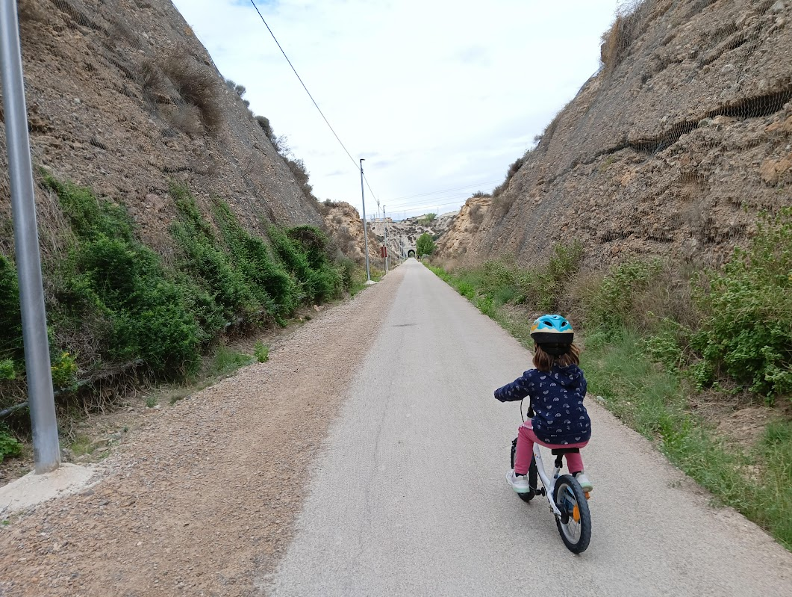
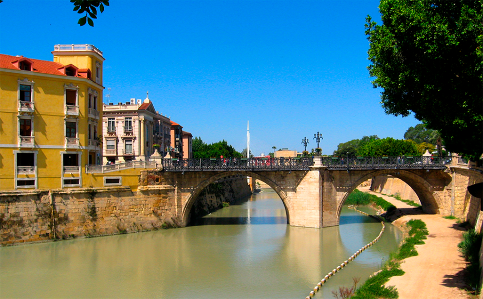

Plaza de Santiago
Salida: 9:30Quedamos en el parque de la pérgola. Revisión rápida de bicis y recordatorio de normas de grupo.

Fecha: 1 de marzo de 2026 · Salida: 9:30 (Plaza de Santiago, Murcia)
Distancia: ~33 km | Duración aproximada: 4 h en movimiento (~7 horas en total)
Dificultad: Moderada | Ascenso total: ~160 m
Ruta cicloturista en familia (niños desde 7 años) para saborear la huerta y el Segura: Vía Verde del Noroeste y paradas emblemáticas en la Contraparada y la Rueda de la Ñora. Habrá paradas frecuentes para descansar, jugar y reponer fuerzas (incluida chocolatada). Lleva casco, agua, almuerzo y comida para todo el día, además de repuestos básicos. Existe una variante corta (~17 km) usando el tranvía para acortar kilómetros; ver detalle al final de la página.


Puedes descargar el track haciendo clic en el mapa de la ruta.


Quedamos en el parque de la pérgola. Revisión rápida de bicis y recordatorio de normas de grupo.
Tras pasar la Ermita de Churra y la huerta de El Puntal, subimos por los Rectores hasta el Campus de Espinardo, donde comienza la Vía Verde del Noroeste. Chocolatada en el área de picnic junto al Museo de Rocas al aire libre de la UMU antes de la subida final al punto más alto de la ruta, el Mirador de Agridulce.
Subimos el último tramo de la Vía Verde, parada en el área de descanso del Mirador de Agridulce y descenso atravesando los túneles de la Vía Verde hasta Molina de Segura. Más info: Vía Verde del Noroeste.
Bajamos hasta Ribera de Molina y atravesamos los túneles hacia Torrealta.
Cruzamos el Río Mula y seguimos hacia la Contraparada por Huerta de Abajo. Comida y descanso.
Después de comer salimos hacia Murcia, pasamos junto a la antigua fábrica de pólvora y nos desviamos a La Ñora para visitar la Rueda. Acompañamos a quien quiera tomar el tranvía en Los Jerónimos y el resto regresamos a Murcia por la mota del Río Segura.
Regreso a Murcia y vuelta a Santiago y Zaraiche por el carril bici de Avda. Teniente Flomesta y Avda. de la Fama.
Opción pensada para peques: usar el tranvía para recortar parte del recorrido y enlazar solo los tramos más seguros (aprox. 17 km). Consulta y descarga el track: